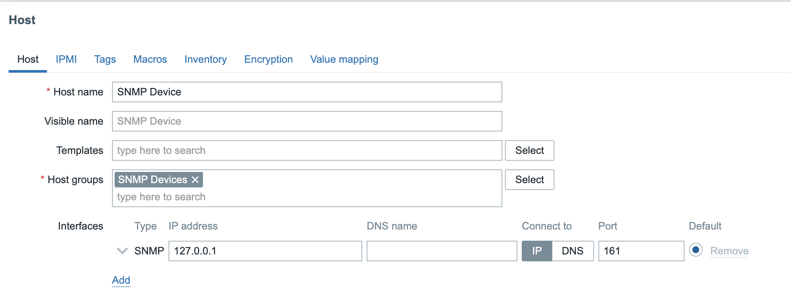
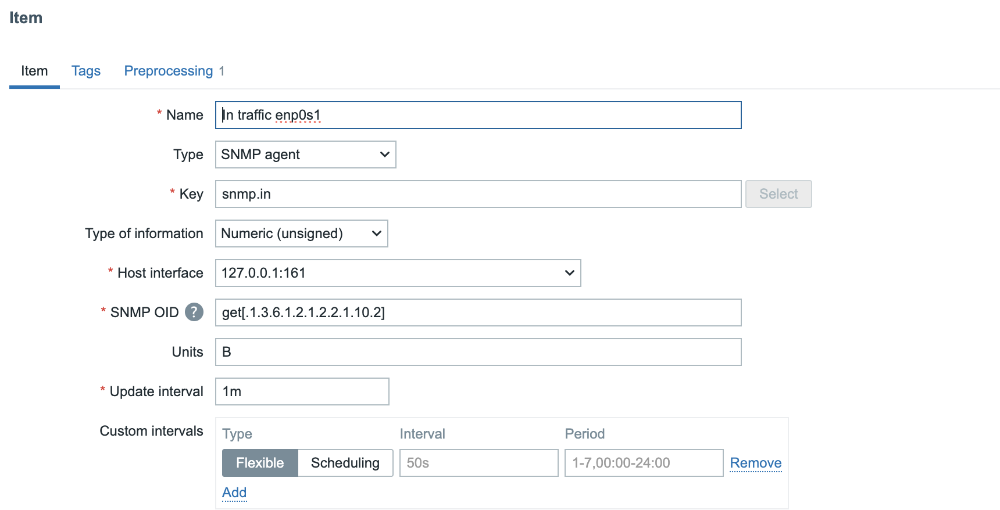
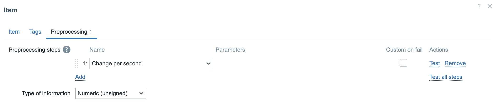
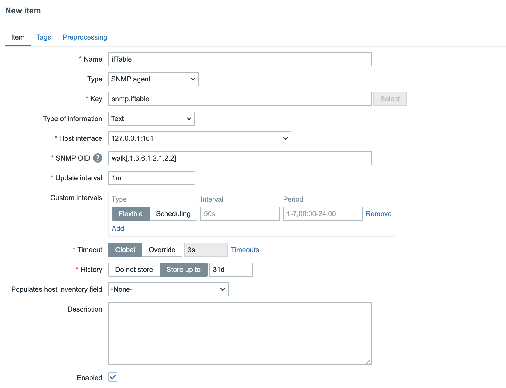
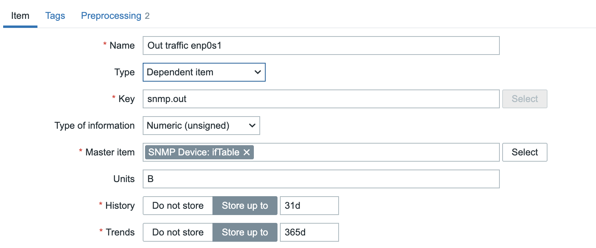
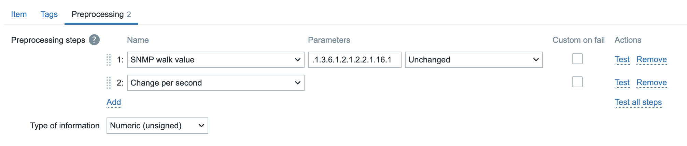

SNMP Polling
In the previous chapter, we explored monitoring strategies that relied on both active and passive Zabbix agents. This chapter introduces an alternative approach monitoring via SNMP (Simple Network Management Protocol) which does not require the installation of a Zabbix agent on the monitored device. This method is especially useful in environments where agent based monitoring is impractical, restricted or simply not allowed.
Simple Network Management Protocol (SNMP) is a widely adopted protocol designed for monitoring and managing devices on IP networks. Despite the word "management" in its name, SNMP is predominantly employed for monitoring purposes. Its widespread support across networking hardware and embedded systems has made it a cornerstone of modern network visibility solutions.
Originally developed in the late 1980s, SNMP has undergone several revisions. Early versions, such as SNMPv1 and SNMPv2c, were hampered by significant security limitations. As a result, while SNMP includes functionality for remote device configuration, its use has remained largely to status monitoring rather than active management of devices.
SNMP is especially valuable for monitoring resource constrained or embedded devices that lack the capacity to run a full monitoring agent.
Common examples include:
- Printers
- Network switches, routers, and firewalls
- Uninterruptible Power Supplies (UPSs)
- NAS (Network-Attached Storage) appliances
- Environmental sensors (e.g., temperature, humidity sensors)
These devices often provide built-in SNMP support, making them accessible for monitoring with minimal configuration. Additionally, SNMP can be employed on standard servers where installing or maintaining a Zabbix agent is either impractical or not permitted. This could be due to administrative policies, software compatibility or security concerns, or simply a desire to reduce system footprint.
Recognizing the ubiquity of SNMP, Zabbix provides native SNMP support. This capability is powered by the open-source Net-SNMP suite, available at http://net-snmp.sourceforge.net. The integration allows Zabbix to retrieve metrics from SNMP-enabled devices using industry standard mechanisms.
In this chapter, we will cover the following:
- An introduction to the Net-SNMP toolkit and its core utilities.
- How to integrate MIB (Management Information Base) files into Zabbix, enabling the platform to interpret SNMP data correctly.
- The process of SNMP polling within Zabbix, including how to define SNMP-based items and retrieve data from devices.
This chapter serves as the foundation for SNMP-based monitoring in Zabbix. While we begin with the essentials such as polling, MIB usage, and SNMP item configuration this is just the start.
Later in this book, we will build upon this knowledge by exploring Low-Level Discovery (LLD) mechanisms using SNMP. LLD allows Zabbix to automatically detect and create monitoring items for dynamic or repetitive structures, such as network interfaces, power supplies, ...
What is a MIB?
Imagine you have a house full of smart devices: a smart thermostat, a smart lamp, and a smart doorbell. All these devices keep track of various types of information. The thermostat has the indoor temperature and battery status, the lamp has its brightness and color, and the doorbell has a log of who has been at the door.
A MIB (Management Information Base) is the "table of contents" or "catalog" of all this information on a network device. Every SNMP enabled device has its own MIB, which is structured and organized. Without a MIB, your Zabbix server wouldn't know what data is available to monitor. The MIB specifies exactly which metrics the device can share.
What is an OID?
To retrieve a specific piece of information from that catalog, you need an address. An OID (Object Identifier) is that address.
You can think of an OID as a GPS coordinate or a book's unique ISBN number. It's a hierarchical sequence of numbers (for example, 1.3.6.1.2.1.1.3.0) that leads you to one specific piece of information, such as a device's uptime or the number of network errors on a particular port.
The OID is the exact path to the data within the MIB. Zabbix uses these OIDs to know what to request from the device. You configure Zabbix to say: "Request the value of this specific OID," and the device returns the requested value.
In short:
- The MIB is the library catalog that describes the structure of all available data.
- The OID is the specific address that leads you to the book (the data) you're looking for.
When Zabbix wants to monitor a device via SNMP, it uses an OID to send an SNMP request. The agent on the device searches its MIB for the data corresponding to that OID and sends the value back to Zabbix. This is the foundation of SNMP based monitoring.
What Is the OID Tree Structure?
The OID (Object Identifier) structure is a hierarchical tree, much like a family tree or a computer's folder structure. This tree is standardized globally. Each point on the tree, from the root to the "leaves," is represented by a number.
The tree starts at the root, with a few main branches managed by international
organizations. The most common branch for network management and SNMP often begins
with 1.3.6.1. Let's break down this OID to see how the structure works:
- 1: This branch is managed by ISO (International Organization for Standardization).
- 1.3: This branch is for
identified-organization. - 1.3.6: This is the branch for the U.S. Department of Defense (DoD).
- 1.3.6.1: This is the internet branch, managed by the IETF (Internet Engineering Task Force).
- ... and so on.
Every branch in this tree is responsible for managing the numbers below it. Companies
like Cisco or projects like Net-SNMP get their own unique number under a specific
branch, most commonly under 1.3.6.1.4.1, which is reserved for private enterprises.
How to Use the OID Tree
For Zabbix, the OID tree is essential for understanding what data is available on a device. Instead of remembering long, unreadable strings of numbers, MIB (Management Information Base) files use text labels to translate the numbers into human-readable names.
Example:
- The OID for a device's system description is:
1.3.6.1.2.1.1.1.0. - An MIB file translates this to:
sysDescr.0.
You can use the OID tree to:
- Look up data manually: You can browse MIB files or online OID databases to find the exact OID for the metric you want to monitor.
- Use SNMP commands: With commands like
snmpwalk,snmpget, orsnmpstatus, you can use the numeric OIDs or the readable names (if MIBs are loaded) to request data from a device. - Configure LLD (Low-Level Discovery): Zabbix uses OID sub-trees to automatically create monitoring items for dynamic components, such as network interfaces or disk partitions.
Net-SNMP
The Simple Network Management Protocol (SNMP) is a widely used protocol for monitoring and managing networked devices. It operates primarily over UDP port 161, though in certain cases, SNMP agents or proxies may also support TCP port 161 for enhanced reliability or integration with specific tools. SNMP allows administrators to query information or trigger actions on remote devices using structured data identified by Object Identifiers (OIDs).
To begin working with SNMP in a lab or testing environment, you may choose between two approaches:
- Use an existing SNMP capable device already present in your network infrastructure.
- Deploy a lightweight SNMP agent on a general-purpose server, such as your Zabbix server or a dedicated virtual machine.
In this chapter, we will walk through the installation and configuration of a basic SNMP agent on a RedHat, Suse or Ubuntu based Zabbix server. However, the same setup can be applied to any compatible Linux system.
Note: If you're using a device already present on your network, ensure:
- You have network access to the device (verify routing and firewall settings).
- SNMP access is allowed from your Zabbix server’s IP address.
- The correct community string is configured, and your IP is included in the SNMP access control rules of the device.
Dataflow between Zabbix and the SNMP device.
graph TD
A[Zabbix Server] -->|SNMP Request on port 161/UDP| B(Router, Switch, Printer, ...);
B -->|SNMP Agent| C{"Management Information Base (MIB)"};
C -->|Read data via OID's| B;
B -->|SNMP Response| A
4.28 Overview
Before we start lets go over a few tools that we will use and explain what they exactly do.
- snmpget: Retrieves the value of a single, specific OID.
- snmpwalk: Walks an entire OID subtree and displays all of its values.
- snmpstatus: Provides a summary of a device's basic status.
Testing an SNMP Device: Where to Start?
When you're looking to test an SNMP device, it's crucial to understand the available SNMP versions and which ones you should prioritize. Currently, there are three commonly used versions: SNMPv1, SNMPv2c, and SNMPv3.
- SNMPv1: This is the oldest version and should generally be avoided unless absolutely necessary. It's quite limited in functionality and has serious security vulnerabilities.
- SNMPv2c: Still the most prevalent version today, SNMPv2c offers improvements over v1, especially in data retrieval and performance. It's relatively straightforward to configure and use.
- SNMPv3: This version is rapidly gaining popularity and is considered the most secure and advanced option. It provides encryption, authentication, and user management, which are essential for secure networks.
Your First Test Attempt: SNMPv2c and the 'public' Community String
To begin your testing, we recommend trying to connect to your device using SNMPv2c and the standard community string 'public'. Many devices ship with these default settings, though it's certainly insecure for production environments.
You can use the snmpstatus command for this. Here’s an example of how you might
do this in your terminal:
Testing SNMPv2c with the 'public' community string
Replace [IP-address_of_the_device] with the actual IP address or hostname of the
device you wish to test.
What if You Get No Information Back?
If you don't receive any information after this attempt, don't panic. It simply means the default settings likely don't apply to your device, or there might be a network related issue. You'll need to dig deeper into your device's configuration or troubleshoot your network.
First, check the device's configuration:
- SNMP Version: Which SNMP version (v1, v2c, or v3) is configured and enabled?
- Community String (for v1/v2c): If your device uses SNMPv1 or SNMPv2c, what is the configured community string (similar to a password) for read-only and potentially read- write access? It's rarely 'public' in a properly configured environment.
-
Username, Authentication, and Privacy (for v3): If your device uses SNMPv3, you'll need more specific information:
- Username: What username has been created for SNMPv3?
- Authentication Protocol and Password: Which authentication protocol (e.g., MD5, SHA) is used, and what is its corresponding password?
- Privacy Protocol and Password: Which encryption protocol (e.g., DES, AES) is used, and what is its corresponding password?
Next, consider potential network issues:
Even if your device is correctly configured, network obstacles can prevent SNMP communication. Check for:
- Firewall Blocking: A firewall (either on your testing machine, the network, or the SNMP device itself) might be blocking the UDP port 161, which SNMP typically uses. Ensure the necessary ports are open.
- ACL Settings on the Device: The SNMP device itself might have Access Control List (ACL) settings configured to restrict access only to specific IP addresses. Verify that your testing machine's IP address is permitted.
- Network Connectivity: Basic network issues like incorrect IP addresses, subnet masks, or routing problems can also prevent communication. Ensure there's a clear network path between your testing machine and the SNMP device.
SNMPv3 Security Levels
SNMPv3 offers significant security enhancements over older, unsecured versions (SNMPv1 and SNMPv2c). The protocol has three security levels:
-
noAuthNoPriv (Authentication and encryption off): This is the least secure level. There's no authentication and no encryption. It's similar to SNMPv1 and SNMPv2c and offers no protection. It should only be used in strictly controlled lab environments where security is not a concern.
-
authNoPriv (Authentication on, encryption off): This level authenticates the user, which guarantees data integrity. It verifies that messages come from a trusted source and haven't been tampered with. However, the data isn't encrypted, so it remains readable if the traffic is intercepted. This level is suitable for non-sensitive data in a relatively secure network. Authentication protocols used here are typically MD5 or SHA.
-
authPriv (Authentication and encryption on): This is the most secure and recommended level. It provides both authentication and data encryption. Authentication ensures the integrity and origin of the message, while encryption makes the data unreadable to third parties. This is essential for monitoring sensitive information or when communicating over unsecured networks. Encryption protocols used include DES, 3DES, and AES.
Examples of SNMPv3 Commands
Once you have the necessary information (and have ruled out network issues), you
can try connecting with SNMPv3. Here are some examples of how you might use snmpstatus
with SNMPv3 (depending on your configuration):
- Authentication only (no encryption):
Testing SNMPv3 with authentication only
snmpstatus -v 3 -l authNoPriv -u [username] -a [authentication_protocol] \
-A [authentication_password] [IP-address_of_the_device]
[authentication_protocol] with MD5 or SHA)
- Authentication and Encryption:
Testing SNMPv3 with authentication and encryption
snmpstatus -v 3 -l authPriv -u [username] -a [authentication_protocol] \
-A [authentication_password] -x [privacy_protocol] \
-X [privacy_wachtwoord] [IP-address_of_the_device]
(Replace [authentication_protocol] with MD5 or SHA and [privacy_protocol]
with DES or AES)
A Note on SNMPv1: Avoid if Possible
While you can technically test with SNMPv1, we strongly advise against using it in production. SNMPv1 is an outdated and insecure protocol version vulnerable to various attacks. Always try to connect with v2c or v3 first. Only if you are absolutely certain that the device exclusively supports SNMPv1 and you have no other option, you can try using it:
However, remember that using SNMPv1 in a production environment poses a significant security risk.
Understanding the Output of snmpstatus
Let's take a look at an example output from the snmpstatus command. Remember
this is just an example output it will differ from your result.
Example output of snmpstatus
This output provides a concise summary of the device's status, indicating a successful SNMP query. Let's break down what each part means:
-
snmpstatus -v2c -c public 127.0.0.1:-v2c: Specifies that SNMP version 2c was used.-c public: Indicates that the community string "public" was used for authentication.127.0.0.1: This is the target IP address, in this case, the localhost (the machine on which the command was run).
-
[UDP: [127.0.0.1]:161->[0.0.0.0]:33310]:- This section describes the communication path.
UDP: Confirms that the User Datagram Protocol was used, which is standard for SNMP.[127.0.0.1]:161: This is the source of the SNMP request and the standard SNMP port (161) on which the SNMP agent listens.->[0.0.0.0]:33310: This indicates the destination of the response.0.0.0.0is a placeholder for "any address," and33310is a high-numbered ephemeral port used by the client to receive the response.
-
[Linux localhost.localdomain 5.14.0-570.28.1.el9_6.aarch64 #1 SMP PREEMPT_DYNAMIC Thu Jul 24 07:50:10 EDT 2025 aarch64]:- This is crucial information about the queried device itself.
Linux localhost.localdomain: Identifies the operating system as Linux, with the hostnamelocalhost.localdomain.5.14.0-570.28.1.el9_6.aarch64: This is the kernel version and architecture#1 SMP PREEMPT_DYNAMIC Thu Jul 24 07:50:10 EDT 2025 aarch64: Provides further kernel build details, including the build date and time.
-
Up: 1:24:36.58:- This indicates the uptime of the device. The system has been running for 1 day, 24 hours, 36 minutes, and 58 seconds.
-
Interfaces: 2, Recv/Trans packets: 355763/355129 | IP: 37414/35988:Interfaces: 2: This tells us that the device has detected 2 network interfaces.Recv/Trans packets: 355763/355129: These numbers represent the total number of packets received and transmitted across all network interfaces on the device since it was last booted.IP: 37414/35988: These figures likely represent the number of IP datagrams received and sent specifically by the IP layer on the device. This provides a more specific metric of IP traffic compared to the total packet count which includes other layer 2 protocols.
In summary, this output from snmpstatus quickly provides a clear overview of a
Linux system's basic health and network activity, confirming that the SNMP agent
is reachable and responding with the requested information using SNMPv2c.
Installing SNMP Agent on a Linux Host
Now that we know a bit more about SNMP it's time to start playing next we will install the SNMP agent and utilities on our Zabbix server to do some testing. Or another compatible system if you prefer.
Follow the steps below to get the SNMP agent installed.
- Install Required Packages
Install Net-SNMP agent and utilities
Red Hat
Suse
Ubuntu
- Configure the SNMP Agent First, create a clean configuration file for the SNMP daemon:
Paste the following example configuration, which is optimized for SNMP-based discovery and testing in Zabbix:
Example SNMP configuration for Zabbix testing
localhost:~ # tee /etc/snmp/snmpd.conf <<EOF
# --------------------------------------------------------------------------
# BASIC ACCESS CONTROL
# --------------------------------------------------------------------------
# This defines who has access and with which community string.
# For a LAB ENVIRONMENT, 'public' is acceptable, but EMPHASIZE THAT THIS IS UNSAFE
# FOR PRODUCTION. In production, use SNMPv3 or restricted IP ranges.
# Read-only community string 'public' for all IP addresses (WARNING: LAB USE ONLY!)
rocommunity public
#
# IMPORTANT NOTE: The 'public' community string is the default and most well-known community string.
# Using this in a production environment is EXTREMELY INSECURE and makes your device vulnerable.
# Anyone who knows your device's IP address can query basic information about your system.
# USE THIS ONLY AND EXCLUSIVELY IN STRICTLY ISOLATED TEST OR LAB ENVIRONMENTS!
# For production environments:
# - Use a unique, complex community string (e.g., rocommunity YourSuperSecretString)
# - STRONGLY CONSIDER implementing SNMPv3 for superior security (authentication and encryption).
#
# BETTER FOR LAB (or production with restrictions):
# rocommunity my_secure_community_string 192.168.56.0/24
# Replace '192.168.56.0/24' with the subnet where your Zabbix Server is located.
# ============================================
# SNMPv3 Configuration (Recommended for Production, but here with examples)
# ============================================
#
# This section defines users for SNMPv3, each with a different security level.
# In a production environment, you would typically ONLY use the 'authPriv' option
# with strong, unique passwords. This setup is useful for lab and testing purposes.
# --- 1. SNMPv3 User with Authentication and Privacy (authPriv) ---
# THIS IS THE MOST SECURE AND RECOMMENDED SECURITY LEVEL FOR PRODUCTION.
# It requires both correct authentication and encryption of the traffic.
#
# Syntax: createUser USERNAME AUTH_PROTOCOL "AUTH_PASS" PRIV_PROTOCOL "PRIV_PASS"
# Example: createUser mysecureuser SHA "StrongAuthP@ss1" AES "SuperPrivP@ss2"
createUser secureuser SHA "AuthP@ssSec#1" AES "PrivP@ssSec#2"
rouser secureuser authPriv
# --- 2. SNMPv3 User with Authentication Only (authNoPriv) ---
# This level requires authentication, but the data is NOT encrypted.
# The content of SNMP packets can be read if traffic is intercepted.
# NOT RECOMMENDED FOR SENSITIVE DATA OR PRODUCTION ENVIRONMENTS.
#
# Syntax: createUser USERNAME AUTH_PROTOCOL "AUTH_PASS"
# Example: createUser authonlyuser SHA "AuthOnlyP@ss3"
createUser authonlyuser SHA "AuthOnlyP@ss3"
rouser authonlyuser authNoPriv
# --- 3. SNMPv3 User with [48;32;186;960;2604tNo Authentication and No Privacy (noAuthNoPriv) ---
# THIS IS THE LEAST SECURE LEVEL AND SHOULD NEVER BE USED IN PRODUCTION!
# It offers NO SECURITY WHATSOEVER. It's purely for very specific test scenarios
# where security is not a concern.
#
# Syntax: createUser USERNAME
# Example: createUser insecureuser
createUser insecureuser
rouser insecureuser noAuthNoPriv
#
# IMPORTANT SECURITY NOTES FOR ALL SNMPv3 USERS:
# - Replace the example usernames and passwords with your OWN strong, unique values.
# - Passwords must be a MINIMUM of 8 characters long.
# - The passwords for AUTH and PRIV (with authPriv) do not have to be the same.
# - Restrict access to specific IP addresses (e.g., 'rouser USERNAME authPriv 192.168.1.0/24')
# if you want to further tighten access.
#
# --------------------------------------------------------------------------
# SYSTEM INFORMATION (OPTIONAL)
# --------------------------------------------------------------------------
# This information is generally available via SNMP and useful for identification.
syslocation "Rocky Linux Zabbix SNMP Lab Server"
syscontact "Your Name <your.email@example.com>"
sysname "RockySNMPHost01" # Often overridden by hostname, but can be specific
# --------------------------------------------------------------------------
# ENABLING CRUCIAL MIB MODULES FOR LLD
# --------------------------------------------------------------------------
# 'view' statements determine which parts of the MIB tree are visible.
# 'systemview' is a standard view. We ensure that the most useful OID trees
# for Zabbix LLD are included here.
# Standard System MIBs (uptime, description, etc.)
view systemview included .1.3.6.1.2.1.1 # SNMPv2-MIB::sysDescr, sysUptime, etc.
# HOST-RESOURCES-MIB: ESSENTIAL FOR LLD OF HARDWARE/OS COMPONENTS
# This MIB contains information about storage (filesystems), processors,
# installed software, running processes, etc.
view systemview included .1.3.6.1.2.1.25
# IF-MIB: ESSENTIAL FOR LLD OF NETWORK INTERFACES
# Contains detailed information about network interfaces.
view systemview included .1.3.6.1.2.1.2
# Other useful MIBs (often standard or optional)
view systemview included .1.3.6.1.2.1.4
view systemview included .1.3.6.1.2.1.6
view systemview included .1.3.6.1.2.1.7
# --------------------------------------------------------------------------
# EXTENDING SNMPD WITH EXEC COMMANDS (OPTIONAL FOR CUSTOM LLD)
# --------------------------------------------------------------------------
# This allows you to make the output of shell commands or scripts available via SNMP.
# This is ideal for monitoring things not natively available via SNMP.
# Example: Monitor the number of logged-in users (not LLD, but demonstrates the principle)
# exec activeUsers /usr/bin/who | wc -l
# Example: A script that generates LLD-like output
# imagine /opt/scripts/docker_lld.sh returns JSON that Zabbix can parse
# exec dockerContainers /opt/scripts/docker_lld.sh
# This requires a custom LLD parser in Zabbix. For an introduction, this
# might be a bit too advanced, but it's good to mention as a possibility.
# --------------------------------------------------------------------------
# SYSLOGGING
# --------------------------------------------------------------------------
# For logging snmpd activities (useful for debugging)
dontLogTCPWrappers no
EOF
Let's do some practical tests with this setup we just created. Start the SNMP Service and Configure the Firewall
Start the SNMP service and configure firewall rules
Start and enable snmpd service to start on boot
Check if the service is correctly started and running
If your system uses a firewall, ensure that SNMP traffic is allowed:
RedHat / Suse
Ubuntu
Verifying SNMP Functionality From your Zabbix server or any SNMP client system with net-snmp-utils installed:
Testing SNMP functionality with snmpwalk
Replace <IP_ADDRESS> with the IP of the client where you installed the SNMP
config. If localhost you can use 127.0.0.1.
General system info (sysDescr, sysUptime, etc.)
List interface names (useful for interface LLD)
List filesystem descriptions
Get CPU load per processor core
Note
For SNMPv3 we can do the same. You could adapt the configuration file or just
go with what we have prepared already in the snmpd.conf file.
Configure SNMPv3 users
Look for the following lines in '/etc/snmp/snmpd.conf` and adapt them as you like.
createUser authonlyuser SHA "AuthOnlyP@ss3"
rouser authonlyuser authNoPriv
createUser secureuser SHA "AuthP@ssSec#1" AES "PrivP@ssSec#2"
rouser secureuser authPriv
createUser insecureuser
rouser insecureuser noAuthNoPriv
After you have adapted your config don't forget to restart the snmpd service
You should now be able to test your items with SNMPv3 Let me give you an example
command for noAuthNoPriv, authNoPriv and the most secure authPriv. This should
work out of the box with what is already configured in our snmpd.conf file.
Testing SNMPv3 with different security levels
Troubleshooting SNMPv3 Authentication Issues
If you change the config file and adapt the passwords and for some reason they do not get accepted, do not worry:
- Check if your passwords contain special characters that might need to be
escaped in the command line. For bash, these include:
$,&,*,(,),!, etc. If your password contains any of these characters, you need to escape them with a backslash (\) or enclose the entire password in single quotes (') to prevent the shell from interpreting them. - If there are no special characters used, just try restarting the service.
- If things still don't work, you can try removing the persistent key file: It's quite brutal but in our test environment it should help you out.
Deploying bare minimum MIB files
Gathering proper MIB files might sounds a tedious and time consuming task.
Installing too many MIBs will cause degradation for the SNMP trap translation process and slow down the SNMP polling process.
Usually the Linux distribution comes with a set of basic MIB files. For example, on
Ubuntu, the snmp-mibs-downloader package, or on Suse the snmp-mibs package
provides a collection of MIB files that can be used for SNMP monitoring. However,
these MIBs may not cover all the devices in your network, especially if you have
equipment from multiple vendors.
Here is an universal method (treat it as one of many possible options) on how to obtain bare minimum MIBs to work with most of devices. This is useful for both SNMP polling and trapping.
The project https://github.com/netdisco/netdisco-mibs
exist for 20 years and is a collection of MIBs for a lot of vendors. Dare I say: all vendors?
We will download the collection and install the MIB files in the /usr/local/share/snmp/mibs directory.
After that we will configure SNMP to use only the MIBS we require.
Performance impact
Loading lots of MIBs will cause degradation for the SNMP trap translation process and slow down the SNMP polling process.
Also, you might get warnings like:
Warning: Module MAU-MIB was in /usr/local/share/snmp/mibs//DOT3-MAU-MIB.txt now is /usr/local/share/snmp/mibs//RFC2668-MIB.txt
Warning: Module DISMAN-EVENT-MIB was in /usr/local/share/snmp/mibs//EVENT-MIB.txt now is /usr/local/share/snmp/mibs//DISMAN-EVENT-MIB.txt
Warning: Module P-BRIDGE-MIB was in /usr/local/share/snmp/mibs//P-BRIDGE-MIB.txt now is /usr/local/share/snmp/mibs//P-BRIDGE.txt
Install MIB files from Netdisco collection
Download and unpack the Netdisco MIB collection, then move the relevant MIB files to the SNMP MIB directory:
curl -kL https://github.com/netdisco/netdisco-mibs/archive/refs/heads/master.zip -o /tmp/netdisco-mibs.zip
unzip /tmp/netdisco-mibs.zip -d /tmp
Next, move the MIB files from the Netdisco collection to the SNMP MIB directory. The Netdisco collection organizes MIBs in subdirectories based on vendor names, and we will move only those directories that start with a lowercase letter or digit, which typically represent vendor-specific MIBs.
mkdir /usr/local/share/snmp/mibs
find /tmp/netdisco-mibs-master -mindepth 1 -maxdepth 1 -type d -name '[a-z0-9]*' -exec mv \{\} /usr/local/share/snmp/mibs/ \;
Finally, we can clean up the temporary files:
To enable bare minimum MIBs we need to enable two catalogs "rfc" and "net-snmp".
Overwrite/replace /etc/snmp/snmp.conf by with:
Configure SNMP to use RFC and Net-SNMP MIBs
This will override the OS default MIB search path and set it to include only the RFC and Net-SNMP MIBs, which are commonly used and provide a good starting point for most SNMP monitoring scenarios.
Fun fact
Changes to the /etc/snmp/snmp.conf file are applied on the fly.
No need to restart anything.
Repeat on each Server/Proxy
If you have multiple Zabbix servers and/or proxies that will be processing SNMP traps, you will need to repeat this MIB installation and configuration process on each of those servers to ensure consistent trap translation and processing across your monitoring infrastructure.
Include another vendor
Let's say we need to work with Cisco equipment. We can double-check if vendor is included in Netdisco bundle. Grep for case insensitive name:
Check if Cisco MIBs are included in Netdisco collection
If the vendor is in list, then include "cisco" directory by adding an additional
line in /etc/snmp/snmp.conf:
Include Cisco MIBs in SNMP configuration
mibdirs /usr/local/share/snmp/mibs/rfc:/usr/local/share/snmp/mibs/net-snmp
# Cisco MIBs
mibdirs +/usr/local/share/snmp/mibs/cisco
Note the + sign before the second mibdirs directive, which tells SNMP to append
the Cisco MIBs to the existing search path rather than replacing it. This allows us
to maintain the core RFC and Net-SNMP MIBs while adding vendor-specific MIBs as needed
in a maintainable way.
Performance impact
Adding multiple vendors is possible but it will slow down the translation speed. Count on an additional 1s for each vendor added, as the SNMP engine needs to load and parse all MIB files in the specified directories to translate OIDs into human-readable names. To mitigate this, ensure that on each server/proxy you only include the MIBs that are relevant to the devices you are monitoring on that specific server/proxy, rather than loading a large number of unnecessary MIBs that can bloat the search path and slow down processing.
(optional) Bulletproof, MIB-less solution
Official Zabbix SNMP templates do not require installing MIB files, as they target
raw OIDs for data polling. If we continue this style for trapping too
we can create a dependency-free solution by enabling a "numerical" flag inside
/etc/snmp/snmptrapd.conf.
Enable numerical traps in snmptrapd.conf
Add or modify the following line in /etc/snmp/snmptrapd.conf to enable
numerical traps:
Next, restart the snmptrapd service, send test, and check the log:
In the long run
Using numerical OIDs in Zabbix SNMP items can significantly increase the
time required to design a template, since the dot (.) in numerical OIDs is a
special character in regular expressions. This means that the dot must be
escaped (e.g., \.) in any regex preprocessing steps to ensure proper parsing.
Failing to escape the dot can lead to unexpected behavior, even if it appears
to work correctly 99.9% of the time. Without escaping, the dot acts as a
wildcard, matching any character, which violates the principle of a precise
and bulletproof solution. Proper escaping ensures that the OID is interpreted
exactly as intended, eliminating ambiguity and potential errors in monitoring.
Using numerical traps can be best direction if:
-
There is a big passion about bulletproof solutions. Creating a solution with the bare minimum of dependencies - MIBs are never required for Zabbix proxies.
-
Template readability is not an issue. You are the only person in the monitoring department. There are no team mates.
-
Have a lot of time to design solution
-
You are willing to share your masterpiece with the internet. Perhaps share it at GitHub
SNMP Monitoring in Zabbix
Now that we have covered how SNMP itself works, it's time to put that knowledge into practice. We'll start up our Zabbix instance and begin monitoring, but first, it's crucial to understand the two different methods Zabbix offers for retrieving SNMP information from a device.
EngineID Uniqueness
The RFC3411 Specs specify that an EngineID needs to be unique this is very important for monitoring. You will see errors like Bad parse of ASN.1 if you have a conflict.
Within an administrative domain, an snmpEngineID is the unique and
unambiguous identifier of an SNMP engine. Since there is a one-to-
one association between SNMP engines and SNMP entities, it also
uniquely and unambiguously identifies the SNMP entity within that
administrative domain. Note that it is possible for SNMP entities in
different administrative domains to have the same value for
snmpEngineID. Federation of administrative domains may necessitate
assignment of new values.
Zabbix supports two distinct approaches for SNMP monitoring: synchronous (legacy) and asynchronous (recommended). Each method has unique characteristics, performance implications, and use cases.
Synchronous SNMP Monitoring
In synchronous mode, Zabbix queries SNMP devices one OID at a time, waiting for a response before proceeding to the next check. This method is straightforward but can become inefficient in large environments.
-
OID Handling: A single textual or numeric OID (e.g., 1.3.6.1.2.1.31.1.1.1.6.3) is specified in the item’s SNMP OID field.
-
Configuration: Timeout and performance are controlled by the 'Timeout' and 'StartPollers' parameters in the Zabbix server configuration file.
-
Combined processing: In legacy synchronous monitoring, Zabbix can combine multiple OIDs into a single request to optimize performance. However, this still operates within the synchronous framework, meaning Zabbix will wait for the combined response before moving on to the next check. For more details about combined processing, refer to the Zabbix documentation: Internal workings of combined processing.
Characteristics:
- Sequential, blocking, and predictable timing.
- Use Case: Small environments or scenarios requiring precise timing.
Asynchronous SNMP Monitoring
Asynchronous monitoring leverages native SNMP bulk requests (GetBulkRequest-PDUs)
and parallel processing, significantly improving performance and scalability.
Bulk Requests and Combined Processing
Combined processing is a feature of the legacy synchronous SNMP monitoring method and is not to be confused with the bulk request capabilities of asynchronous monitoring. In earlier versions of Zabbix, combined processing however was called "bulk processing" which can lead to confusion. The key difference is that combined processing still operates within a synchronous framework, while asynchronous monitoring uses true SNMP bulk requests to retrieve multiple OIDs in parallel without waiting for each response.
-
OID Handling:
walk[OID1, OID2, ...]: Retrieves a subtree of values (e.g.,walk[1.3.6.1.2.1.2.2.1.2,1.3.6.1.2.1.2.2.1.3]).get[OID]: Retrieves a single value asynchronously (e.g.,get[1.3.6.1.2.1.31.1.1.1.6.3]).
-
Configuration:
- Timeout settings are configurable per item. A low timeout is recommended to avoid delays. As Zabbix retries up to 5 times, a 3-second timeout could lead to a 15-second wait if a device is unreachable.
- Concurrency is managed by the
MaxConcurrentChecksPerPollerparameter (max 1000 checks) andStartSNMPPollers. - DNS resolution is handled asynchronously.
Characteristics:
- Parallel, non-blocking, and highly efficient.
- Use Case: Large-scale environments with many SNMP hosts.
Comparison of SNMP Monitoring Methods
| Method | Direction | Timing | Example | Pros | Cons |
|---|---|---|---|---|---|
| Polling (Sync) | Zabbix → Device | Periodic | SNMP GET for CPU load | Predictable, simple | Slower, more traffic |
| Polling (Async) | Zabbix → Device | Parallel | Many SNMP GETs at once | Fast, scalable | More complex tuning |
Polling Your First OID in Zabbix
Let's begin by polling our first OID in Zabbix. As you may recall from a previous
snmpwalk command, querying .1.3.6.1.2.1.2.2.1.2 returned two results, identifying
the network interfaces on the device:
IF-MIB::ifDescr.1 = STRING: loIF-MIB::ifDescr.2 = STRING: enp0s1
To find the inbound and outbound octets for the enp0s1 network card, we need to
locate the correct OID. While a MIB file would provide a clear map of all available
OIDs, this isn't always an option. A common method to discover the correct OID is
to perform a broader snmpwalk by removing the last digit from the initial OID.
Finding the correct OID with snmpwalk
This command returns a more extensive list of MIB objects:
From this output, we can see that the index for our target network card, enp0s1,
is 2. This confirms that we can use this index to find the correct data.
The output IF-MIB::ifInOctets.2 = Counter32: 49954965 appears to be the value
we need, but this is not the raw OID.
To convert this human-readable output into a numerical OID that Zabbix can use,
we can add the -On flag to our snmpwalk command, which converts the output
to its numerical form.
Converting OID to numerical form with snmpwalk
The result of next command will be the specific OID for the inbound octets
on the enp0s1 interface:
This is the OID you would use to configure an SNMP item in Zabbix to monitor the network traffic for this specific interface.
Another useful tool that will help here is snmptranslate which does the same
thing and also the other way back.
snmptranslate
There is yet another tool that helps to visualise a SNMP table with the easy to
remember name ... snmptable. This tool allows you to see the data more easy
then a simple a snmp walk. To stay with our network cards have a look at this
output.
snmptable
Polling a single SNMP item
Ok enough with the theory let's create an actual item in Zabbix. Create a new
host with the name SNMP Device and place it in a group SNMP Devices. We also
need to tell Zabbix where we can find our SNMP device as Zabbix is doing the
polling (Or if we use a Proxy it will be the proxy.)
So let's add a SNMP Interface and give it the IP of the device we would like
to monitor. If you have been following our steps on the local machine you can
use ip 127.0.0.1, our own server.

4.29 SNMP Interface
Once our host is created and saved with the correct interface we have to create
an item on the host. Click on items next to the host SNMP Device. On the top
right click the box Create item you will be greeted with another form to fill
in the item information.
- Name:
In traffic enp0s1(A short descriptive name) - Type: SNMP Agent
- Key:
snmp.in(free form short descriptive) - Type of information: Numeric (Unsigned)
- Host interface: The SNMP interface we created on our host. If you have more then 1 interface just select the one you need.
- SNMP OID:
get[<OID>]to retrieve the information or only the<OID>but then it will use synchronous polling. - Units: The data is in bytes so use
B.

4.30 SNMP Item
Before we safe this item there is one more important step we need to do. Network items are usually counters. Meaning the device is just counting the amount of traffic that passed the interface. This means the counter will always go up as more data passes the interface over time. So we need to calculate a delta.
For this we can use preprocessing steps so let's move to the tab preprocessing first before we save it.
Add a preprocessing step with the name Change per second

snmp preprocessing
We can now save the item and have a look at our latest data page we should have a nice graph with our data over time.
If you decide to use the test button before you save the item (which is always a good idea) then don't forget that Zabbix needs two item values to calculate the difference. So you will have to press the Get value and test button twice.
Also don't forget to select the Get value from host box so Zabbix retrieves it from the host.
How does change per second work ?
Given a counter value sampled at two different times:
- At time \(t_1\), the counter value is \(C_1\).
- At time \(t_2\) the counter value is \(C_2\).
The change per second (rate) is calculated as:
where \(t_2 - t_1\) is the time elapsed in seconds.
If the counter rolls over (i.e., \(C_2 < C_1\), and the max counter value is \(M\), then adjust as:
Polling a list of item
Let's do the same for our snmp-walk item. This time we will look for the
information from all our interfaces. For this we need to find our correct OID
first. This can be done with snmptranslate which will convert our table name
to an OID,
Finding the OID for a table with snmptranslate
This is the OID we can use in our item. Let's clone our previous item and make some changes.
- Name:
ifTable(or another descriptive name) - Key:
snmp.ifTable - Type of information:: Text
- SNMP OID:
walk[.1.3.6.1.2.1.2.2]
The rest can stay as is, just remove the preprocessing step we added in the earlier example as this item will return us a whole list of information.

4.31 SNMP Walk
When we press the Get value and test button in the test item screen we get a whole list of data.
Output of SNMP walk in Zabbix
.1.3.6.1.2.1.2.2.1.1.1 = INTEGER: 1
.1.3.6.1.2.1.2.2.1.1.2 = INTEGER: 2
.1.3.6.1.2.1.2.2.1.2.1 = STRING: "lo"
.1.3.6.1.2.1.2.2.1.2.2 = STRING: "enp0s1"
.1.3.6.1.2.1.2.2.1.3.1 = INTEGER: 24
.1.3.6.1.2.1.2.2.1.3.2 = INTEGER: 6
.1.3.6.1.2.1.2.2.1.4.1 = INTEGER: 65536
.1.3.6.1.2.1.2.2.1.4.2 = INTEGER: 1500
.1.3.6.1.2.1.2.2.1.5.1 = Gauge32: 10000000
.1.3.6.1.2.1.2.2.1.5.2 = Gauge32: 0
.1.3.6.1.2.1.2.2.1.6.1 = STRING: ""
.1.3.6.1.2.1.2.2.1.6.2 = STRING: "76:ae:5:aa:5f:45"
.1.3.6.1.2.1.2.2.1.7.1 = INTEGER: 1
.1.3.6.1.2.1.2.2.1.7.2 = INTEGER: 1
.1.3.6.1.2.1.2.2.1.8.1 = INTEGER: 1
.1.3.6.1.2.1.2.2.1.8.2 = INTEGER: 1
.1.3.6.1.2.1.2.2.1.9.1 = 0
.1.3.6.1.2.1.2.2.1.9.2 = 0
.1.3.6.1.2.1.2.2.1.10.1 = Counter32: 69417222
.1.3.6.1.2.1.2.2.1.10.2 = Counter32: 59215034
.1.3.6.1.2.1.2.2.1.11.1 = Counter32: 6460587
.1.3.6.1.2.1.2.2.1.11.2 = Counter32: 113038
.1.3.6.1.2.1.2.2.1.12.1 = Counter32: 0
.1.3.6.1.2.1.2.2.1.12.2 = Counter32: 0
.1.3.6.1.2.1.2.2.1.13.1 = Counter32: 0
.1.3.6.1.2.1.2.2.1.13.2 = Counter32: 0
.1.3.6.1.2.1.2.2.1.14.1 = Counter32: 0
.1.3.6.1.2.1.2.2.1.14.2 = Counter32: 0
.1.3.6.1.2.1.2.2.1.15.1 = Counter32: 0
.1.3.6.1.2.1.2.2.1.15.2 = Counter32: 0
.1.3.6.1.2.1.2.2.1.16.1 = Counter32: 69417222
.1.3.6.1.2.1.2.2.1.16.2 = Counter32: 44139841
.1.3.6.1.2.1.2.2.1.17.1 = Counter32: 6460587
.1.3.6.1.2.1.2.2.1.17.2 = Counter32: 97398
.1.3.6.1.2.1.2.2.1.18.1 = Counter32: 0
.1.3.6.1.2.1.2.2.1.18.2 = Counter32: 0
.1.3.6.1.2.1.2.2.1.19.1 = Counter32: 0
.1.3.6.1.2.1.2.2.1.19.2 = Counter32: 0
.1.3.6.1.2.1.2.2.1.20.1 = Counter32: 0
.1.3.6.1.2.1.2.2.1.20.2 = Counter32: 0
.1.3.6.1.2.1.2.2.1.21.1 = Gauge32: 0
.1.3.6.1.2.1.2.2.1.21.2 = Gauge32: 0
.1.3.6.1.2.1.2.2.1.22.1 = OID: .0.0
.1.3.6.1.2.1.2.2.1.22.2 = OID: .0.0
So we have the traffic in metrics but we would like to find traffic out metrics
as well of course. Let's use our walk item to extract the outgoing traffic. For
this we need to create a dependent item.
Go to Data collection - Hosts and click on Items. You should be able to
see our newly created ifTable item and 3 dots before it's name.
Click on those 3 dots and select Create dependent item from the list. Fill in the new item with the following information:
- Name:
Out traffic enp0s1 - Type: Dependent item
- Key:
snmp.out - Type of information: Unsigned
- Master item: Already filled in but should be our item
ifTablethat we made before. - Units:
B

4.32 Dependent SNMP Item
This item as is at the moment is an exact copy of our master item so we need to add some preprocessing steps first. Let's go to the tab Preprocessing and add our first step.
Add the step SNMP walk value and paste the OID in the Parameter field:
.1.3.6.1.2.1.2.2.1.16.1 and choose Unchanged.
Remember from our previous item we need to calculate the Changes per second so add this as the second preprocessing step.

04.34 preprocessing steps
Going now to the Latest data page, it will show the "In" and "Out" traffic for our network card but with data gathered in different ways. Both ways use the synchronous pollers but the last way will gather all data at once and then use preprocessing to extract and calculate the required values for the specific items.
After you have added more items you can remove the option to keep history from your master items.
Conclusion
SNMP polling remains a vital method for monitoring network devices when agents are not an option. With Zabbix's asynchronous polling, checks can run in parallel, dramatically improving performance and lowering the load on both your server and the network. SNMPv3 should be your go-to choice, delivering authentication and encryption to secure sensitive data. The SNMP walk item type adds another advantage collecting multiple metrics in bulk with a single request, making discovery and ongoing polling faster and more efficient.
By combining these modern features with carefully tuned polling intervals and item counts, you can create an SNMP setup that is secure, efficient, and scalable. And with asynchronous speed, SNMPv3 security, and bulk walks at your disposal, you're ready to monitor more devices, in less time, with greater confidence. Now it's time to put these capabilities to work and see just how far your monitoring can go.
Questions
- Why is it better use SNMPv3 instead of v2c or v1 ?
- Do I need to configure pollers for SNMP ? If so which pollers ?
- Should I install MIB files on my Zabbix server ? What about proxies ?
- Can I still use the old style to monitor SNMP ? Should I start using get[] and walk[] instead ?
Useful URLs
- https://www.zabbix.com/documentation/current/en/manual/config/items/itemtypes/snmp
- https://en.wikipedia.org/wiki/Simple_Network_Management_Protocol
- https://datatracker.ietf.org/doc/html/rfc3410
- https://blog.zabbix.com/zabbix-snmp-what-you-need-to-know-and-how-to-configure-it/10345/
- https://datatracker.ietf.org/doc/html/rfc3411#section-3.1.1.1